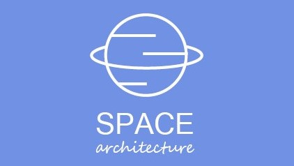

Photography

Musik
Videos
und jetzt kommen Sachen dich tatsächlich gemacht habe:
Mein kleiner Donut

Logos
Ein Logo für ein Schulprojekt.
Ein Logo für BWL letztes Semester.
Und hier ist eine uralte Präsentation über Arts and Crafts
was ich heute gelernt habe? Hebe Projekte auf sonst wird dein Zukunfts-Ich nichts für Portfolios übrig haben.